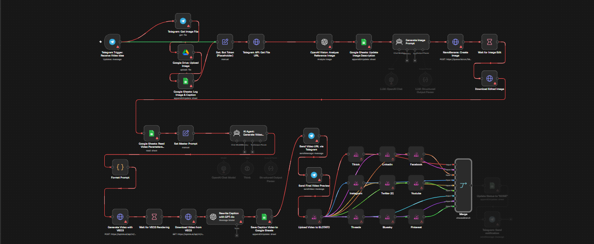
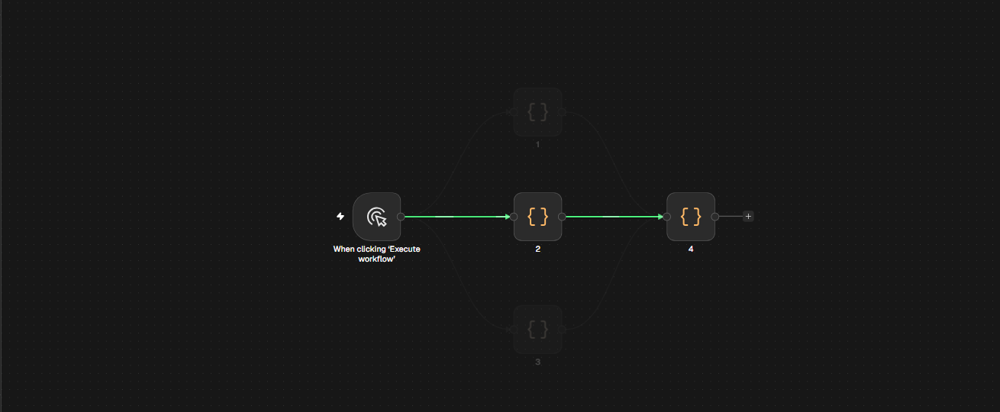

Трассировка по клику
Клик по узлу подсвечивает каждый путь от триггера до него — целиком, без ручного перелистывания схемы.
Расширение для n8n · Chrome Web Store
Path Tracer подсвечивает все пути от триггера до выбранного узла и раскрашивает ветки. Схема, которую раньше приходилось читать глазами, теперь отвечает сразу.
БесплатноБез сбора данныхMIT
Возможности
Без панелей, настроек и второй вкладки. Только то, что нужно, чтобы увидеть структуру потока.
Клик по узлу подсвечивает каждый путь от триггера до него — целиком, без ручного перелистывания схемы.
Общий участок остаётся одного цвета. Новый оттенок появляется только там, где маршрут действительно расходится.
Клик по цветной связи оставляет только её маршрут. Клик по пустому холсту или Esc возвращает всю схему.
n8n 2.45.7 stable запись без ускорения
Демо
Все входящие маршруты подсвечиваются — от триггера до выбранной ноды.
Цвет меняется только на развилках, поэтому структура читается сразу.
Остаётся один путь. Esc или пустой холст снимают выделение.
Кнопка с иконкой расширения — в правом нижнем углу редактора.
Совместимость
n8n Cloud и любой self-hosted экземпляр. Проверено на перечисленных версиях — без обещаний «скоро».


Cloud обновляется сам — расширение подхватывает изменения без настройки. На self-hosted всё работает так же локально.
Поставьте Path Tracer — и следующий клик по узлу покажет весь путь до него.
Установить из Chrome Web StoreБесплатноMITБез сетевых запросов